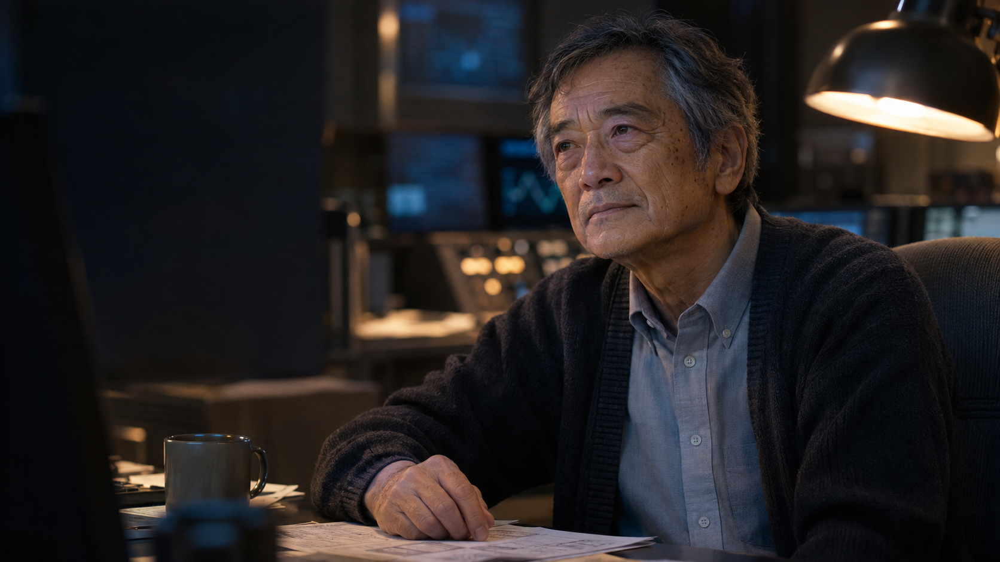

1977
地球を出発
9月5日、ケープカナベラルから打ち上げ。 木星と土星を目指し、ボイジャー1号の長い旅が始まった。
A NONFICTION-INSPIRED FILM CONCEPT
その声が、届くかぎり。
主演イメージ：渡辺謙仁
出演イメージ：大栗旬
配給想定：PIPELINE ｜ 架空の映画企画
TEASER TRAILER
主題歌「何億光年〜Time of Love Letter〜」
NEON CIRCUIT×ONE FOREST MELODY
THE STORY
遠ざかる、小さな信号。
それを待つ、人々がいる。
地球と探査機をつなぐ物語は、
世代を越えて続いていく。
1977年。地球の音、音楽、そして人々の挨拶を乗せて、 無人探査機ボイジャー1号は宇宙へ旅立った。
木星、土星。そして、太陽圏の外側へ。 届くまでの時間が延びていく小さな信号を、 地上の技術者たちは世代を越えて受け取り続けてきた。
長年この計画に携わってきたベテラン技術者と、 その仕事を引き継ぐ若い技術者。 機体の老朽化と限られた電力を前に、 二人は遠い探査機とのつながりを守ろうとする。
いつか、通信が終わる日は来る。 それでも、地球から託されたメッセージを乗せて、 旅は続いていく。
これは、人類が宇宙へ送り出した一通の手紙と、
その返事を待ち続ける人々の物語。
ボイジャー1号の実際の探査をもとにした架空の映画企画です。 登場人物とドラマ部分は創作です。 メインビジュアルは、宇宙の探査機と地上の管制室を 重ね合わせたイメージです。
THE REAL JOURNEY
9月5日、ケープカナベラルから打ち上げ。 木星と土星を目指し、ボイジャー1号の長い旅が始まった。
木星と土星に接近。イオの火山活動や土星の環、 衛星タイタンなどを観測し、 遠い世界の新しい姿を地球へ届けた。
8月25日、太陽圏の外へ到達。 人類の探査機として初めて、 星間空間を直接調べる旅に入った。
NASAは11月18日に地球から1光日の距離へ達する見込みと発表。 電波が片道で約24時間かかる、 遥か遠い場所へ進んでいる。
THE GOLDEN RECORD
ボイジャー1号と2号には、 金メッキを施した銅製ディスク 「ゴールデンレコード」が搭載された。
地球外の知的生命体が見つけたとき、 地球と人類を知る手がかりになるよう選ばれたメッセージ。 55の言語による挨拶、自然や生命の音、 世界の音楽、そして地球を伝える画像。
誰かが受け取る保証はない。
それでも、地球は自らの声を宇宙へ送り出した。
CASTING CONCEPT
半世紀近く続くミッションを支えるのは、 世代を越えて信号を受け継ぐ人々。 重厚な人間ドラマを担うキャスティングイメージ。

高瀬 修一 役長年ボイジャーを支えてきたベテラン技術者。 引退を前に、自らの人生を重ねてきたミッションを 次の世代へ託そうとしている。
高瀬の後任となる技術者。 合理的な判断を重んじる彼は、古い探査機を守る難しさと 向き合う中で、先輩たちがこの旅を続けてきた理由を知っていく。
通信解析を担う研究者。 静かにデータと向き合い、微かな信号から探査機の変化を読み取る。 誰よりも慎重な彼女の小さな気づきが、チームを動かしていく。
配給想定：PIPELINE。 キャスト・役柄はいずれも架空の企画上のイメージです。 その他の出演者は構想中。
THEME SONG
NEON CIRCUIT×ONE FOREST MELODY
私がここにいた証を
どうか忘れないで
人類が宇宙へ託したメッセージを、
ひとりの旅の歌として描く。
本ページは個人制作の架空映画企画です。 東宝株式会社、NASA、JPL、掲載した俳優各位とは関係ありません。 映画化・出演・配給の決定を示すものではありません。 実際のミッション情報はNASA/JPLの公開情報をもとに構成しています。 情報基準：2026年11月17日。